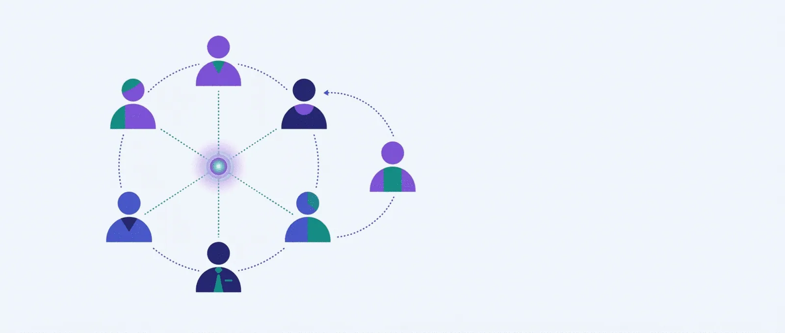

Planul complet pentru coaching de echipă
Coachingul de echipă nu este „coaching 1:1 ținut în sală”. Clientul este echipa ca sistem, nu persoana. Aici sunt modelele, arhitectura de program, instrumentele de diagnostic, metricile și capcanele — cu locurile unde urmează să populăm conținutul vostru.

01Ce este coachingul de echipă
Este un proces de dezvoltare în care clientul este echipa: scopul comun, relațiile interne, modul în care lucrează și felul în care se raportează la mediul său. Coach-ul lucrează cu sistemul, nu cu indivizii pe rând.
Advanced Certification in Team Coaching: lucrează cu echipa ca entitate, pe sistemul relațional și pe performanța colectivă, în parteneriat cu liderul și cu sponsorul.
Individual Team Coach Accreditation: niveluri Foundation → Practitioner → Senior Practitioner → Master, cu practică demonstrată cu echipe și supervizare.
Nu există o ocupație separată pentru team coaching; cadrul legal rămâne COR 242412 (coach) și, pentru componenta de formare, Formator COR 242401.
Cele trei niveluri la care lucrezi simultan
- Sarcina. scopul comun, prioritățile, deciziile, rezultatele livrate.
- Procesul. cum se iau deciziile, cum curge informația, cum se gestionează conflictul.
- Relațiile. încredere, siguranță psihologică, claritatea rolurilor, apartenență.
02Ce NU este: facilitare, training, team building
Cinci intervenții sunt vândute sub aceeași umbrelă. Diferența se vede în cine deține conținutul și unde rămâne schimbarea după ce pleci din sală.
| Dimensiune | Team coaching | Facilitare | Training | Team building | Coaching 1:1 în grup |
|---|---|---|---|---|---|
| Clientul | echipa (sistemul) | grupul, pe o agendă dată | participanții | grupul (moment) | fiecare individ |
| Cine aduce conținutul | echipa | agenda / sponsorul | programa | furnizorul | fiecare persoană |
| Orizont | 3–12 luni | 1–3 zile | 1–5 zile | o zi / un weekend | variabil |
| Lucrează pe conflict? | Da — e materia primă | Îl gestionează | Nu | Îl evită | Parțial |
| Rămâne ceva după? | reguli de lucru + reflexe | decizii + document | competențe individuale | o amintire plăcută | creștere individuală |
03Când are sens și când NU
Diagnosticul diferențial este prima competență: dacă problema e de structură, de proces sau de competență, coachingul de echipă nu e răspunsul corect.
✓ Da, aici funcționează
- Echipă nou formată sau cu lider nou.
- Fuziuni, reorganizări, creștere rapidă.
- Conflict mocnit, discuții „pe hol”, nu în sală.
- Decizii lente, responsabilități neclare.
- Performanță bună individual, slabă colectiv.
- Trecerea la hibrid/remote cu pierderea coeziunii.
✗ Nu, aici NU e răspunsul
- Problema e de structură sau de strategie greșită.
- Liderul nu vrea, dar echipa „trebuie reparată”.
- Lipsă de competență tehnică (e nevoie de training).
- O persoană toxică protejată de management.
- Tăieri iminente și frică generalizată.
- Se caută „o zi de team building” ca pansament.
04Modelele de bază (harta conceptuală)
Nu ai nevoie de toate. Ai nevoie de un model pentru fiecare întrebare: unde suntem, ce ne blochează, ce construim.
Cele 5 discipline ale echipelor performante
Modelul de referință pentru coachingul de echipă: echipa privită ca sistem viu, în relație cu mediul său.
- Commissioning — scopul și mandatul primit
- Clarifying — claritatea rolurilor și a obiectivelor
- Co-creating — cum lucrăm împreună
- Connecting — relațiile cu stakeholderii
- Core learning — învățarea continuă din practică
Cele 5 disfuncții
Piramida care explică de ce echipe inteligente performează slab. Bun pentru diagnostic rapid.
- Absența încrederii
- Frica de conflict
- Lipsa angajamentului
- Evitarea responsabilității
- Neatenția la rezultate
Etapele de dezvoltare
Simplu și util pentru a normaliza tensiunea din faza de Storming.
- Forming
- Storming
- Norming
- Performing
- Adjourning
Goals · Roles · Processes · Interpersonal
Cadru de diagnostic în cascadă: verifici în ordine, pentru că un nivel nerezolvat îl blochează pe următorul.
- Obiective comune
- Roluri clare
- Procese
- Relații
Condițiile eficacității
Cercetarea clasică: echipa reală, direcție convingătoare, structură care facilitează, context de sprijin, coaching expert.
- Echipă reală (graniță, stabilitate)
- Direcție convingătoare
- Structură facilitatoare
- Context de sprijin
- Coaching expert
Siguranța psihologică
Convingerea comună că echipa e sigură pentru asumarea de riscuri interpersonale — predictorul nr. 1 al învățării în echipă.
- A vorbi fără teamă de consecințe
- Greșelile sunt semnalate, nu ascunse
- Întrebările sunt binevenite
05Arhitectura unui program pe 6 luni
Cinci faze, în ordinea corectă. Cea mai frecventă greșeală: sari la ateliere înainte de commissioning și diagnostic, iar rezultatul este o zi plăcută fără efect.
Faza 0 · Commissioning
Săptămâna 1–2. Contractul triunghiular: sponsor, lider, echipă. Ce se cere, ce nu se cere, cum se măsoară.
Faza 1 · Diagnostic
Săptămâna 2–5. Interviuri 1:1, observație în ședințe reale, chestionar, documente. Livrabil: oglinda echipei.
Faza 2 · Restituire & design
Săptămâna 5–6. Prezinți datele, echipa își asumă 2–3 teme de lucru. Nimic nu se decide pentru ei.
Faza 3 · Intervenții
Luna 2–5. Ateliere + sesiuni de echipă + practică între ele. Ritmul bate intensitatea.
Faza 4 · Consolidare
Luna 5–6. Reguli de lucru asumate, ritmuri, trasabilitatea deciziilor, cine ține procesul după plecarea ta.
Faza 5 · Măsurare & încheiere
Luna 6. Re-diagnostic, bilanț cu sponsorul, decizie: continuăm, oprim sau trecem la alt format.
Calendar orientativ
| Luna | Activitate | Durată | Participanți | Livrabil |
|---|---|---|---|---|
| Luna 1 | Interviuri + observație | — | toți + sponsor | raport de diagnostic |
| Luna 2 | Atelier de restituire | — | echipa + lider | 2–3 teme asumate |
| Luna 3 | Sesiune de echipă 1 | — | echipa | reguli de lucru |
| Luna 4 | Sesiune de echipă 2 + 1:1 lider | — | echipa / lider | decizii + responsabili |
| Luna 5 | Sesiune de echipă 3 | — | echipa | plan de menținere |
| Luna 6 | Re-diagnostic + bilanț | — | toți + sponsor | raport de impact |
Atelierele — design complet
Patru ateliere, câte unul pe fază, cu obiectiv, durată, pași și materiale. Între ele: practică, nu mai multe ateliere.
06Instrumente de diagnostic
Instrumentul nu înlocuiește judecata, dar o disciplinează. Alege maximum două, altfel transformi echipa într-un proiect de cercetare.
Grilă de interviu 1:1
Baza oricărui diagnostic: aceleași întrebări pentru toți, în aceeași ordine. Se aplică individual, cu garanția confidențialității.
Chestionar de echipă (scară 1–5)
12 itemi pe 4 dimensiuni, anonim. Se aplică identic la început (baseline) și la final (măsurare).
Grilă de observație în ședințe
Cea mai subestimată sursă de date: echipa în funcțiune, nu echipa care vorbește despre ea însăși.
07Competențele specifice (ACTC / ITCA)
Aceleași 8 competențe ICF, aplicate la nivel de sistem. Diferența: clientul este colectiv, iar „insightul” trebuie să aparțină echipei, nu unei persoane.
| Competență | Ce înseamnă la nivel de echipă | Marker observabil |
|---|---|---|
| 1. Etică | confidențialitate într-un sistem cu mai mulți interlocutori | — |
| 3. Acorduri | contractul triunghiular sponsor–lider–echipă | — |
| 4. Încredere & siguranță | siguranță psihologică la nivel de grup, nu doar în relația 1:1 | — |
| 5. Prezență | a ține tensiunea din sală fără să o rezolvi prea repede | — |
| 6. Ascultare | auzi sistemul: alianțe, tăceri, cine vorbește pentru cine | — |
| 7. Conștientizare | reflectezi tiparul colectiv, nu persoanele | — |
| 8. Creștere | angajamente asumate de echipă, cu responsabili și termene | — |
08Metrici și ROI
Fără măsurare, coachingul de echipă rămâne o părere. Regula: măsori la început și la final, cu aceiași indicatori, și declari dinainte ce vei considera succes.
| Nivel (Kirkpatrick) | Ce măsori | Indicator concret | Baseline | Țintă |
|---|---|---|---|---|
| 1 · Reacție | utilitatea percepută | — | — | — |
| 2 · Învățare | ce știu să facă diferit | — | — | — |
| 3 · Comportament | ce fac efectiv diferit | — | — | — |
| 4 · Rezultate | indicatori de business | — | — | — |
09Capcane clasice
- Coaching fără mandat. sponsorul vrea „să le crească moralul”, echipa nu a cerut nimic. Se vede din prima ședință.
- Confuzia cu terapia de grup. deschizi răni pe care nu ești calificat să le închizi.
- Liderul ca spectator. dacă liderul nu e în proces, echipa nu are voie să se schimbe.
- Prea multe instrumente. diagnosticul devine proiect, iar energia se consumă în loc să producă schimbare.
- Fără încheiere. procesul se prelungește și devine o prezență permanentă în calendar.
- Confidențialitate nedefinită. cine aude ce a zis cine — dacă nu e stabilit la început, încrederea moare la prima scurgere.
10Ce rămâne de populat
| # | Element | Unde intră | Stare |
|---|---|---|---|
| 1 | Grilă de interviu 1:1 (8 întrebări) | Secțiunea 06 | complet |
| 2 | Grilă de observație în ședințe | Secțiunea 06 | complet |
| 3 | Chestionar echipă (12 itemi, 4 dimensiuni) | Secțiunea 06 | complet |
| 4 | Design de atelier (4 ateliere complete) | Secțiunea 05 | complet |
| 5 | Markeri ACTC/ITCA (coloana 3) | Secțiunea 07 | de făcut |
| 6 | Pachet de metrici și baseline | Secțiunea 08 | de făcut |
| 7 | Studii de caz (echipe, anonimizat) | Secțiune nouă | de făcut |